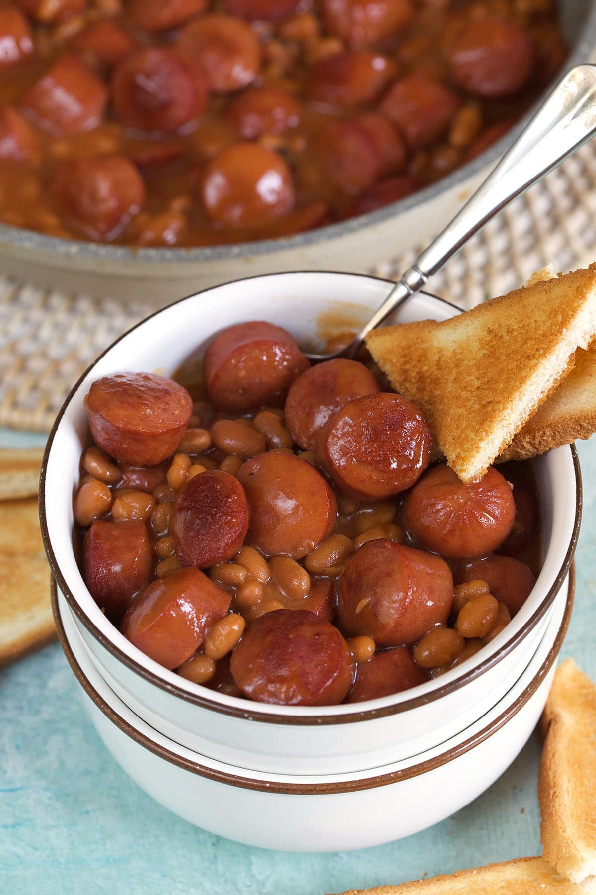

Description
This is a great comfort food for when you need a quick pick me up!
Ingredients
- 16 oz package of hot dogs
- 28 oz can of baked beans (any flavor)
- 2 tbsp brown sugar
- 1 tbsp yellow mustard
- garlic powder
Steps
- Slice the hotdogs into small .5-.75 inch pieces.
- Cook in a pan over medium-high heat until browned, about 3 minutes.
- Add baked beans, brown sugar, yellow mustard, and garlic powder. Mix well.
- Serve!
Home